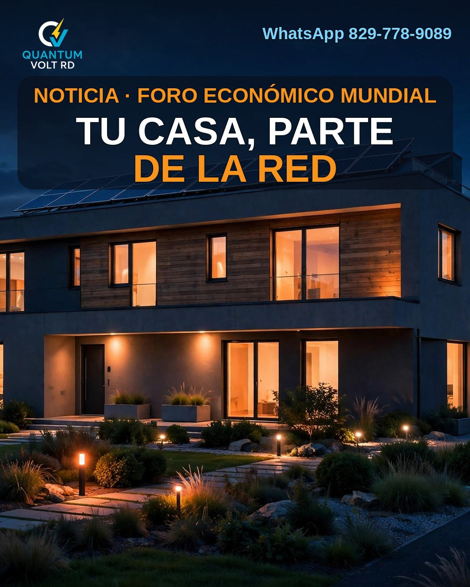
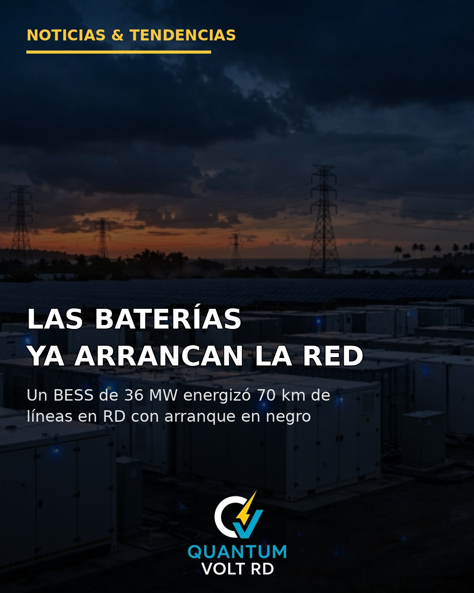
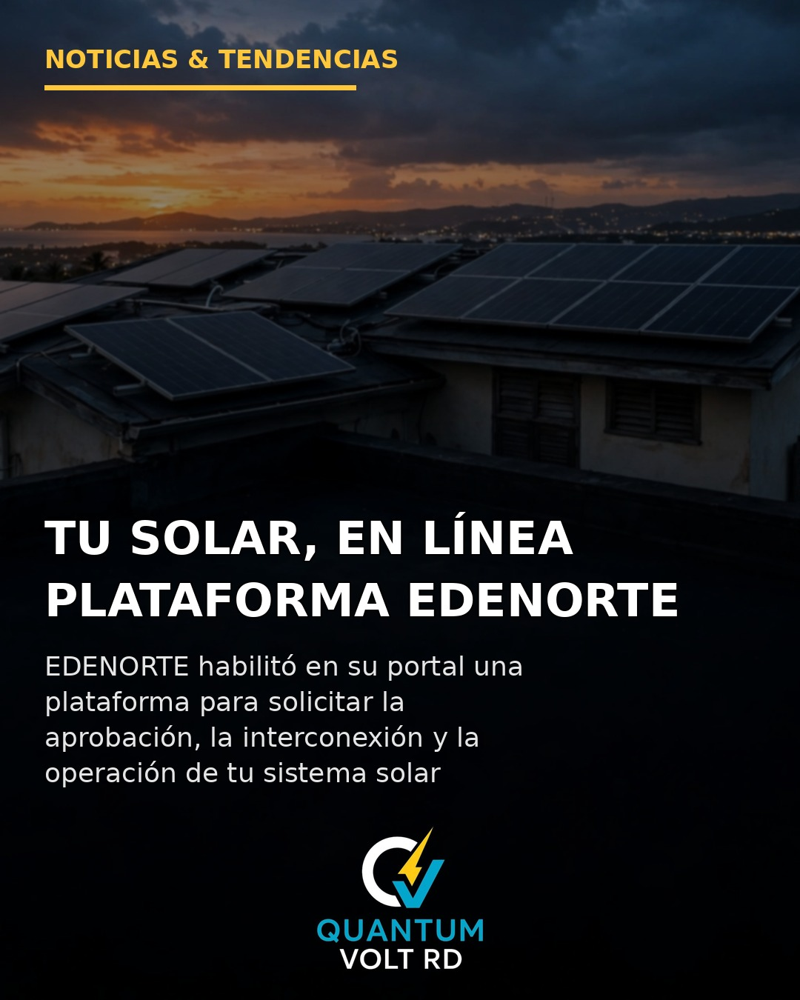
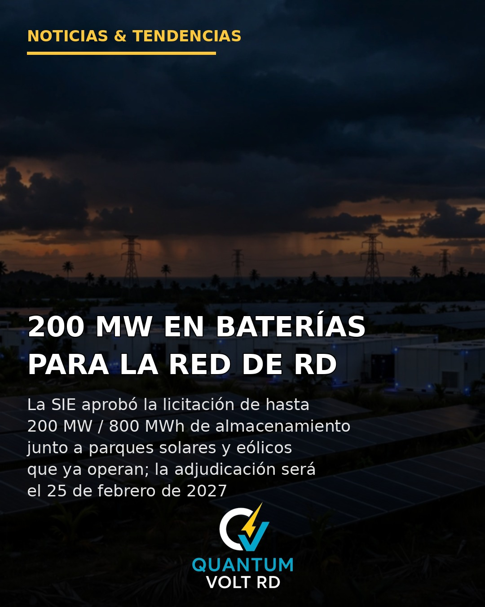
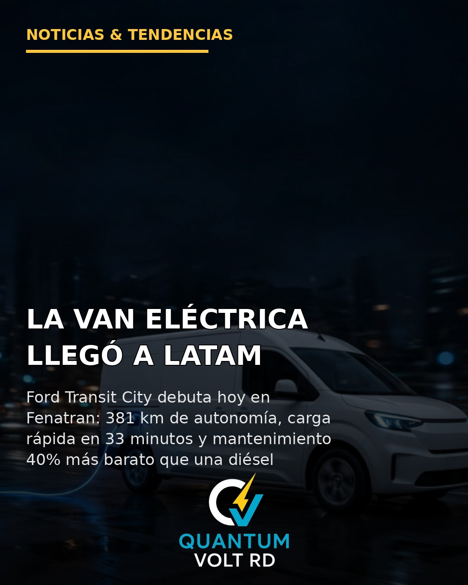
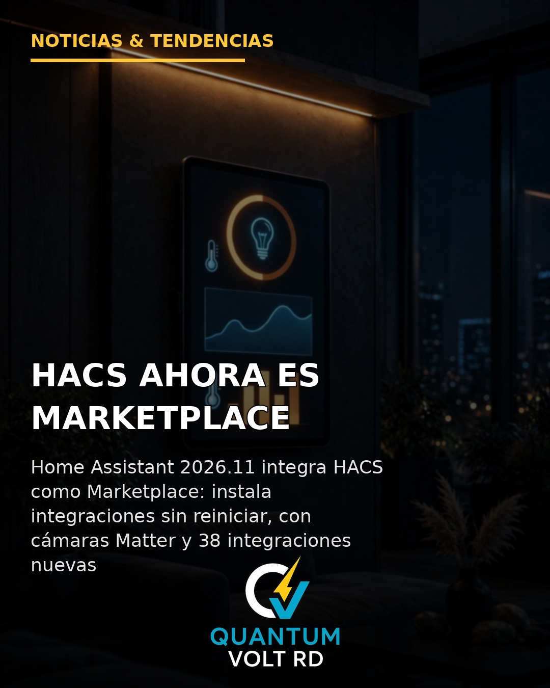
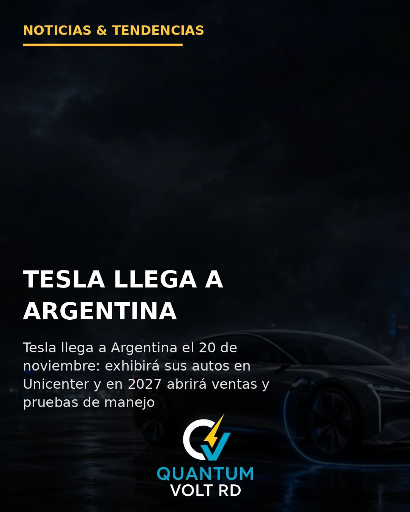
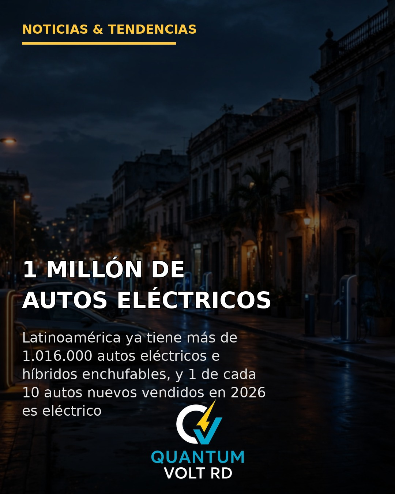
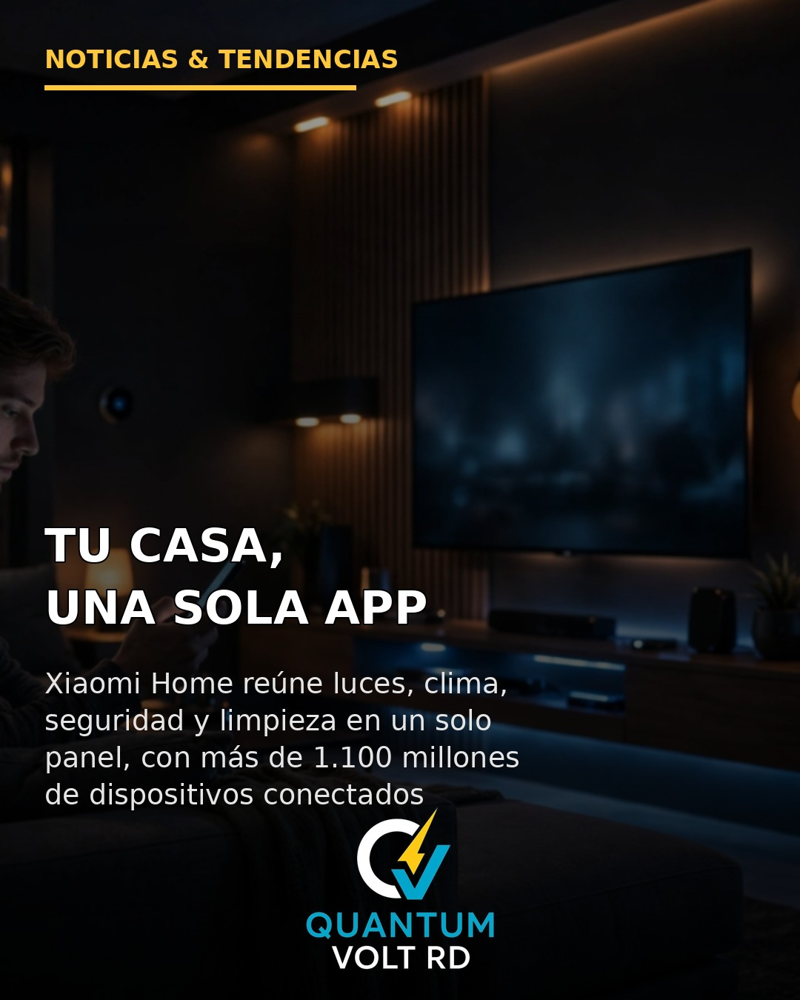
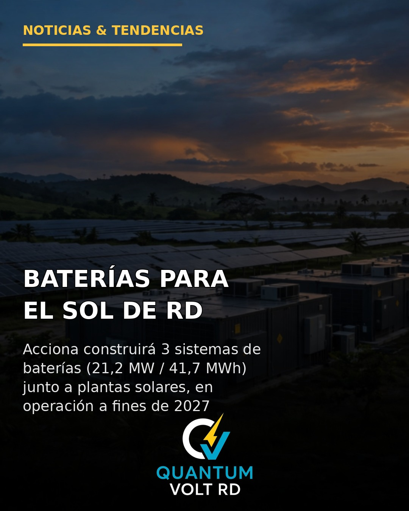

Sección de noticias
Noticias de Quantum Volt RD
Las noticias que publicamos cada día en nuestras redes, también aquí en nuestra página: energía solar, electricidad, domótica y tecnología en República Dominicana, con asesoría para tu hogar o negocio.

13 de noviembre de 2026 · Energía · Tecnología
El Foro Económico Mundial publicó hoy, junto a la COP31, sus 10 tecnologías energéticas emergentes para 2030. Una de ellas es la central eléctrica virtual: un software que coordina las baterías de tu casa, tu vehículo eléctrico y tu termostato para aliviar la red en las horas pico.
Leer la noticia completa →

12 de noviembre de 2026 · Energía solar · Baterías
Un sistema de baterías de 36 MW / 40 MWh energizó 70 km de líneas de transmisión en República Dominicana, sin ayuda de una central convencional. Es el arranque en negro: la propia batería fija la tensión y la frecuencia para poner la red en marcha.
Leer la noticia completa →

11 de noviembre de 2026 · Energía solar · EDENORTE
EDENORTE habilitó en su portal una plataforma en línea para solicitar la aprobación, la interconexión y la operación de tu sistema solar de generación distribuida, bajo la resolución SIE-007-2026-REG. Ahí mismo subes los documentos y le das seguimiento a tu expediente.
Leer la noticia completa →

10 de noviembre de 2026 · Energía renovable · SIE
La SIE aprobó las bases de la licitación EDES-GER-SAEB-01-2026: hasta 200 MW / 800 MWh de baterías junto a parques solares y eólicos existentes, para usar la energía del sol en las horas de mayor demanda. Adjudicación el 25 de febrero de 2027.
Leer la noticia completa →

9 de noviembre de 2026 · Movilidad eléctrica · Ford
Ford presentó en Fenatran su Transit City eléctrica: 381 km de autonomía, batería LFP de 56 kWh y carga rápida del 20 al 80% en 33 minutos. Ya se vende en Argentina y llega a Perú y Sudamérica.
Leer la noticia completa →

8 de noviembre de 2026 · Domótica · Home Assistant
Home Assistant 2026.11 integra HACS como Marketplace nativo: instala integraciones sin reiniciar y con migración automática. También trae cámaras Matter con audio bidireccional, LoRaWAN, 38 integraciones nuevas y un panel de energía con sensores en vatios.
Leer la noticia completa →

7 de noviembre de 2026 · Movilidad eléctrica · Tesla
Tesla confirmó su llegada a la Argentina: el próximo 20 de noviembre exhibirá sus primeros autos eléctricos en Unicenter, Martínez. En 2027 abrirá su punto de venta y habilitará pruebas de manejo, con el Model 3 y el Model Y como los modelos más probables.
Leer la noticia completa →

6 de noviembre de 2026 · Energía e inteligencia artificial · OpenAI
OpenAI lanzó su programa "Grid Protectors": sus futuros centros de datos reducirán su consumo cuando la red esté sobrecargada y liberarán energía para los hogares. El piloto, en Georgia, podrá liberar hasta 1.000 MW, el equivalente al consumo promedio de unos 700.000 hogares.
Leer la noticia completa →

5 de noviembre de 2026 · Movilidad eléctrica · OLADE
América Latina superó el millón de autos eléctricos e híbridos enchufables en circulación, según OLADE: 1.016.034 a junio de 2026. En República Dominicana apenas el 1% de las ventas son eléctricas o híbridas: hay un enorme espacio para crecer.
Leer la noticia completa →

4 de noviembre de 2026 · Domótica · Xiaomi Home
Xiaomi Home reúne luces, climatización, seguridad y limpieza en una sola aplicación, con más de 1.100 millones de dispositivos conectados en todo el mundo. El valor de la domótica ya no es tener más aparatos, sino que todos trabajen juntos desde un solo panel.
Leer la noticia completa →

3 de noviembre de 2026 · Almacenamiento con baterías · Acciona Energía
Tres sistemas de baterías junto a las plantas solares Pedro Corto, Calabaza I y Cotoperí Solar, en operación en el último trimestre de 2027, para estabilizar la red con regulación de frecuencia.
Leer la noticia completa →

2 de noviembre de 2026 · Almacenamiento con baterías · SAEB
En 2025 el 81.1% de la generación dependió de combustibles fósiles importados, y la solar ya suma 1,580.96 MW. La SIE estima hasta 50% menos costo en regulación de frecuencia y los nuevos renovables de 20 MW o más deben incluir baterías del 50%.
Leer la noticia completa →

1 de noviembre de 2026 · Medición Neta · SIE-007-2026-REG
Desde el 1 de noviembre de 2026, la Resolución SIE-007-2026-REG aplica un cargo técnico (no es un impuesto) a determinados usuarios en Medición Neta. El autoconsumo no se cobra; los sistemas de inyección cero o con baterías quedan exentos.
Leer la noticia completa →
Las noticias nuevas se agregan al inicio de esta lista, de la más reciente a la más antigua.
← Volver a la página principal de Quantum Volt RD